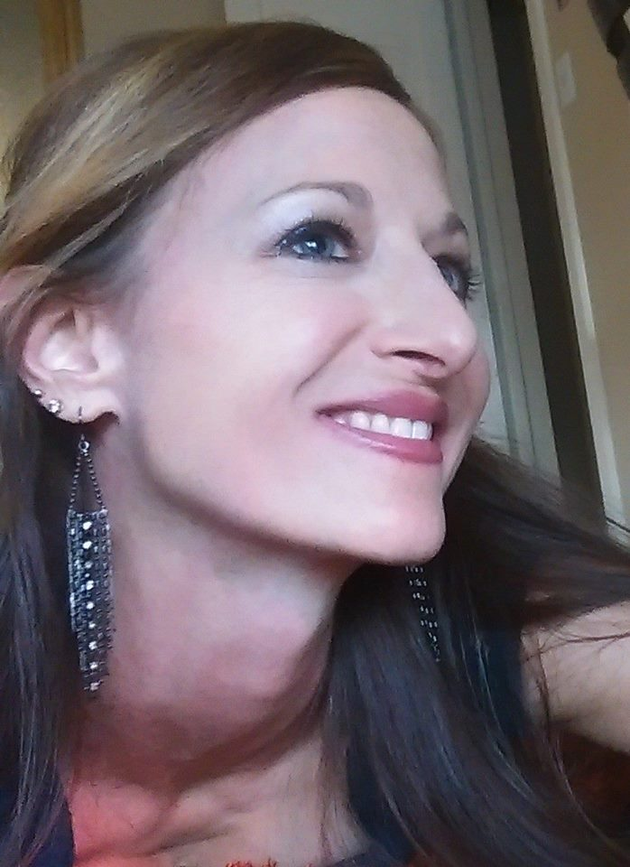

I'm half Russian and half Jewish. I grew up in Los Angeles with a widowed mother who didn't speak much English, which pushed me to be assertive and outgoing. Summer in Russia is awesome. There was a forest behind my grandmother's neighborhood where I could get lost for hours visiting the zoo, the ducks in the swamp, and picking nuts and raspberries.
After high school, I spend about ten years trying to figure out what career I wanted to pursue. Eventually, I finally graduated with a Master's Degree in Philosophy. I'm still not entirely sure about my path. Last year, I graduated from a relationship coaching progam and now I'm studying web development.
I'm quite fond of being a mom, though for a bit, I wasn't sure how that was going to go. My ten-year-old is quite the magical creature. Married life is nice. We are crazy about traveling. I like getting back rubs. I finally convinced my husband to run half-marathons with me, which we like to do in the mountains in the Bay Area. Every December, for my birthday, I run the California International Marathon.